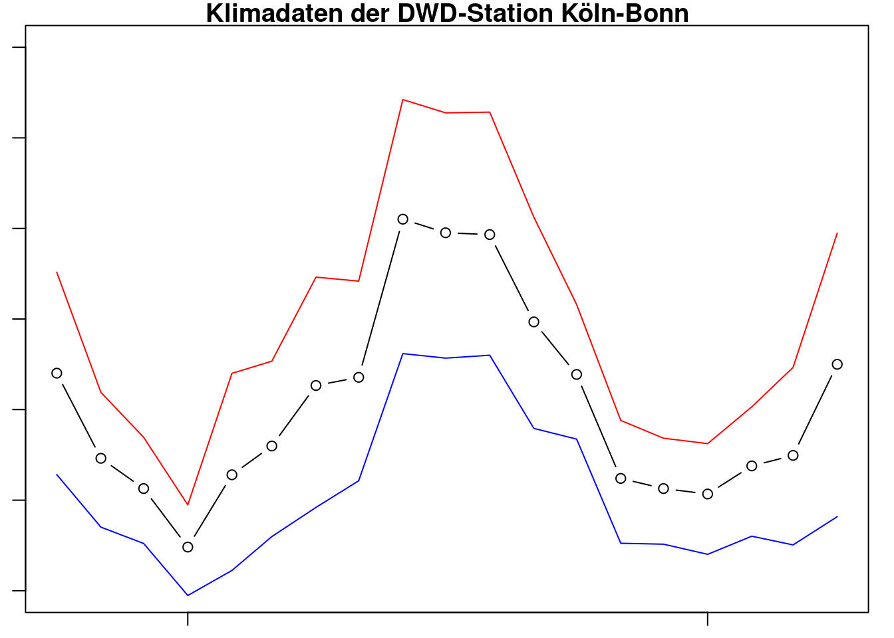
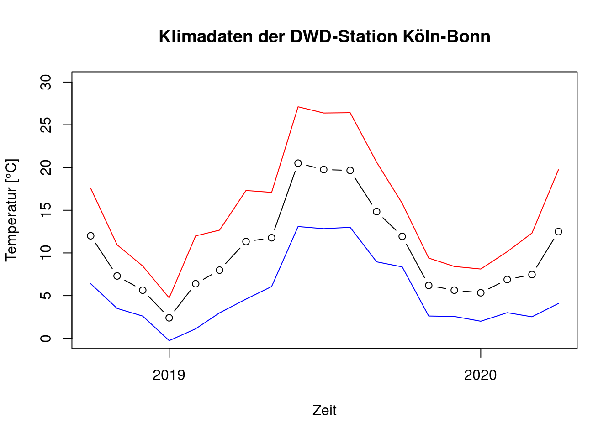
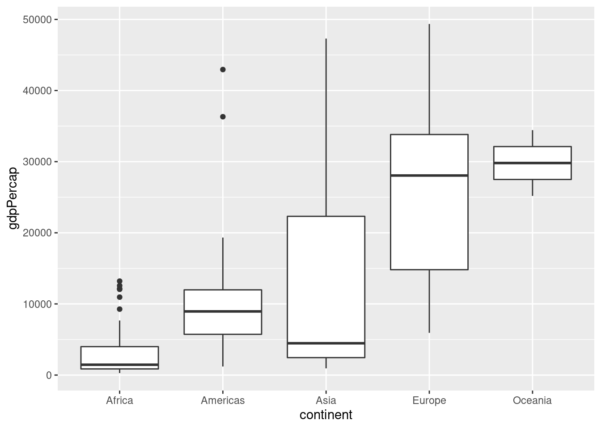

Kapitel 5 Daten visualisieren I: Einfache Grafiken
- Einfache Grafiken erstellen
- Grafiken beschriften und speichern
-
Die Arbeitsweise der Funktion
parbeschreiben - Die grafischen Parameter für Randgröße, Farbe, Schrift- und Symbolgröße einstellen
- Unterschiede zwischen high-level und low-level Grafikfunktionen erklären
- Grafiken mit mehreren Plots erstellen
5.1 Plotten mit R-Basisfunktionen
Für Grafikverliebte und Neugierige empfehle ich die Kapitel 2 und 3 in Murrell (2006).
5.1.1 High-level Grafikfunktion plot und low-level Grafikfunktion lines
Ein Streudiagramm stellt zwei numerische Variablen gegeneinander dar. Wir betrachten Klimadaten der Station Köln-Bonn, die man beim Deutschen Wetterdienst herunterladen kann (https://www.dwd.de/DE/leistungen/klimadatendeutschland/klimadatendeutschland.html).
Sie können den Code aus den Chunks leicht herauskopieren und in RStudio laufen lassen (rechts oben in den Chunks auf das Symbol copy to clipboard klicken).
Wir lesen die Daten ein und sehen uns deren Struktur an.
meteo <- read.table('produkt_klima_monat_20181001_20200430_02667.txt',
header = T, sep = ';')
str(meteo)## 'data.frame': 19 obs. of 17 variables:
## $ STATIONS_ID : int 2667 2667 2667 2667 2667 2667 2667 2667 2667 2667 ...
## $ MESS_DATUM_BEGINN: int 20181001 20181101 20181201 20190101 20190201 20190301 20190401 20190501 20190601 20190701 ...
## $ MESS_DATUM_ENDE : int 20181031 20181130 20181231 20190131 20190228 20190331 20190430 20190531 20190630 20190731 ...
## $ QN_4 : int 3 3 3 3 3 3 3 3 3 3 ...
## $ MO_N : num 4.76 5.51 6.49 6.66 4.79 5.62 4.56 5.37 3.85 4.95 ...
## $ MO_TT : num 12.01 7.31 5.64 2.41 6.4 ...
## $ MO_TX : num 17.58 10.95 8.47 4.74 12 ...
## $ MO_TN : num 6.41 3.51 2.61 -0.26 1.12 ...
## $ MO_FK : num 2.42 2.57 2.68 2.84 2.54 3.06 2.53 2.32 2.4 2.23 ...
## $ MX_TX : num 26.7 19.2 15 8.8 21 20.4 25.9 24.3 36.2 40.3 ...
## $ MX_FX : num 15.3 16.5 18.9 22.8 18.7 28.8 19.5 16.5 26.1 14.6 ...
## $ MX_TN : num 0.4 -4.3 -4.9 -10.7 -3.5 -2.8 -2.3 -1.8 7.3 4.4 ...
## $ MO_SD_S : num 145.4 74.2 33.8 38.2 127.3 ...
## $ QN_6 : int 9 9 9 3 3 3 3 3 3 3 ...
## $ MO_RR : num 26.5 25 101.9 101.8 30 ...
## $ MX_RS : num 6.9 9.7 15.7 22.3 12.3 18.2 21.4 10.6 8.8 11.9 ...
## $ eor : Factor w/ 1 level "eor": 1 1 1 1 1 1 1 1 1 1 ...Uns interessieren hier nur die Spalten MO_TT, MO_TN, MO_TX und MESS_DATUM_BEGINN. Das sind jeweils die Monatsmittel der Lufttemperatur in 2 m Höhe, Monatsmittel des Minimums der Lufttemperatur, Monatsmittel des Maximums der Lufttemperatur und der Beginn der jeweiligen Messperiode (d.h. des Kalendermonats). Um die Daten als Zeitreihen darstellen zu können, wandeln wir die Spalte MESS_DATUM_BEGINN in ein richtiges Zeitobjekt (d.h. ein Objekt der Klasse Date). Das geht mit der Funktion as.Date. Der Parameter format beschreibt den Aufbau des Datums im Objekt meteo: erst steht das Jahr mit 4 Zeichen (z.B. 2018), dann folgt der Monat mit 2 Zeichen (z.B. 01) und dann der Tag mit 2 Zeichen (z.B. 01). Näheres zu Datumsformaten finden Sie mit ?strptime.
## [1] "2018-10-01" "2018-11-01" "2018-12-01" "2019-01-01" "2019-02-01" "2019-03-01"
## [7] "2019-04-01" "2019-05-01" "2019-06-01" "2019-07-01" "2019-08-01" "2019-09-01"
## [13] "2019-10-01" "2019-11-01" "2019-12-01" "2020-01-01" "2020-02-01" "2020-03-01"
## [19] "2020-04-01"Es sind Daten von Oktober 2018 bis April 2020. Wir erstellen ein Streudiagramm mit der Funktion plot. Mit den Parametern xlab und ylab lassen sich die beiden Achsen beschriften und main fügt einen Titel dazu. Der Parameter type bestimmt die Wahl der Symbole; hier benutzen wir type = b für both, also sowohl Punkte als auch Linien.

Die Funktion plot ist eine sogen. high-level Grafikfunktion. Das bedeutet, dass sie alle Schritte des Plottens übernimmt: sie öffnet ein neues Grafikfenster (ein Device), berechnet die Größe der Plotfläche und der Ränder (s. unten), berechnet die Ausdehnung der Achsen und die beste Achseneinteilung und plottet Ihre Daten.
Daneben gibt es low-level Grafikfunktionen, die nur in ein bestehendes Device plotten können. Wir wollen zu unserer Grafik nun die Minimum- und die Maximumtemperatur dazu plotten.
plot(my_date, meteo$MO_TT, type = 'b', xlab = 'Zeit', ylab = 'Temperatur [°C]', main = 'Klimadaten der DWD-Station Köln-Bonn')
# Minimumtemperatur in blau
lines(my_date, meteo$MO_TN, col = 'blue')
# Maximumtemperatur in rot
lines(my_date, meteo$MO_TX, col = 'red')
Dass lines nur eine low-level Grafikfunktion ist, erkennen Sie daran, dass sie nicht in der Lage ist, den Bereich auf der y-Achse zu vergrößern, um alle Daten sichtbar zu machen. Das kann nur plot. Daher muss der Bereich bereits in plot richtig festgelegt werden. Das macht der Parameter ylim.
plot(my_date, meteo$MO_TT, type = 'b', xlab = 'Zeit', ylab = 'Temperatur [°C]', main = 'Klimadaten der DWD-Station Köln-Bonn', ylim = c(0, 30))
# Minimumtemperatur in rot
lines(my_date, meteo$MO_TN, col = 'blue')
# Maximumtemperatur in blau
lines(my_date, meteo$MO_TX, col = 'red')
Wenn in einer Grafik mehrere Elemente dargestellt werden, benötigt man eine Legende. Das erledigt die * low-level* Grafikfunktion legend.
plot(my_date, meteo$MO_TT, type = 'b', xlab = 'Zeit', ylab = 'Temperatur [°C]', main = 'Klimadaten der DWD-Station Köln-Bonn', ylim = c(0, 30))
# Minimumtemperatur in rot
lines(my_date, meteo$MO_TN, col = 'blue')
# Maximumtemperatur in blau
lines(my_date, meteo$MO_TX, col = 'red')
legend('topright', legend = c('Mittelwert', 'Minimum', 'Maximum'),
col = c('black', 'red', 'blue'),
pch = c(1, NA, NA),
lty = 1)
Der Parameter lty steht für line type und die 1 bedeutet durchgezogene Linie. Mit pch legend wir die Art des Symbols fest; hier steht die 1 für das Standardsymbol “offener Kreis”. Die Funktion legend hat viele Möglichkeiten und es lohnt sich, in die Hilfe zu sehen ?legend.
5.1.2 Überblick über die wichtigsten high-level und low-level Grafikfunktionen
Die wichtigsten high-level Grafikfunktionen nach Ligges (2008), verändert:
| Funktion | Beschreibung |
|---|---|
plot |
kontextabhängig – generische Funktion mit vielen Methoden |
barplot |
Säulendiagramm |
boxplot |
Boxplot |
contour |
Höhenlinien-Plot |
coplot |
Conditioning-Plots: Plots zweier Variablen aufgeteilt nach Werten einer dritten |
curve |
Funktionen zeichnen |
dotchart |
Dotplots (nach Cleveland) |
hist |
Histogramm |
image |
Bilder (3. Dimension als Farbe) |
mosaicplot |
Mosaikplots (kategorielle Daten) |
pairs |
Streudiagramm-Matrix |
persp |
perspektivische Flächen |
qqnorm und qqplot |
QQ–Plot |
Die wichtigsten low-level Grafikfunktionen nach Ligges (2008), verändert:
| Funktion | Beschreibung |
|---|---|
abline |
Fügt eine Linie hinzu; diese kann horizontal, vertikal oder über Steigung und Achsenabschnitt definiert werden |
arrows |
Pfeile |
axis |
Achsen |
grid |
Gitternetz |
legend |
Legende |
lines |
Linien (schrittweise) |
mtext |
Text in den Rändern |
plot.new |
Grafik initialisieren |
plot.window |
Koordinatensystem initialisieren |
points |
Punkte |
polygon |
(ausgefüllte) Polygone |
pretty |
berechnet “hübsche” Einteilung der Achsen |
segments |
Linien (vektorwertig) |
text |
Text |
title |
Beschriftung |
5.2 Tuning mit par
Zur Vertiefung dieses Kapitels, empfehle ich Ligges (2008), Kapitel 8.1.3.
Die Grafikebene in R ist aufgeteilt in drei Regionen (Abbildung 5.1) und hat innere und äußere Ränder. Die Ränder werden von unten im Gegenuhrzeigersinn durchnummeriert.
Abbildung 5.1: Aufteilung der Grafikfläche (Ligges 2008).
Mit der Funktion par lassen sich sehr viele Einstellung der Grafik verändern. Viele Einstellungen übergibt die Funktion plot selbständig an par, zu.B. log (Logarithmieren der Achsen), cex (Größe eines Punkts) oder col (Farbe). Andere können aber nur durch Aufrufen der Funktion par verändert werden. Dazu gehören die inneren Ränder mar und die äußeren Ränder oma, die Aufteilung der Grafikebene mit mfrow oder mfcol.
Richtige Benutzung von par:
-
Parameter setzen:
op <- par( … ) - plotten
-
Parameter auf Standard zurück setzen:
par(op)
Die Zuweisung op <- par( ... ) speichert die Standardeinstellungen im Objekt par, bevor Sie sie ändern. Der Aufruf par(op) setzt Ihre Änderungen zurück. Das ist sehr praktisch, wenn Sie z.B. die Aufteilung der Grafikebene nicht mehr benötigen. Wenn Sie die Parameter nicht zurücksetzen, bleiben diese bestehen, bis das Grafikfenster geschlossen wird (z.B. mit dev.off()).
Um die Ränder zu verändern, rufen wir par auf und beschneiden die Ränder, damit Sie den Unterschied erkennen können.
op <- par(mar = c(1, 1, 1, 1))
plot(my_date, meteo$MO_TT, type = 'b', xlab = 'Zeit', ylab = 'Temperatur [°C]', main = 'Klimadaten der DWD-Station Köln-Bonn', ylim = c(0, 30))
# Minimumtemperatur in rot
lines(my_date, meteo$MO_TN, col = 'blue')
# Maximumtemperatur in blau
lines(my_date, meteo$MO_TX, col = 'red')
Die Achsenbeschriftungen und die Zahlen haben jetzt nicht mehr genug Platz und verschwinden. Die Größe der Ränder wird in Zeilen angegeben, ist also relativ zur Gesamtgröße. Die Standardeinstellung ist c(5, 4, 4, 2) + 0.1.
Einige häufig genutzte Argumente in Grafikfunktionen und in par (nach Ligges 2008, verändert). Schlagen Sie die Erklärungen dazu immer in ?par oder ?plot nach.
| Funktion | Beschreibung |
|---|---|
axes |
Achsen sollen (nicht) eingezeichnet werden |
bg |
Hintergrundfarbe |
cex |
Größe eines Punktes bzw. Buchstaben |
col |
Farben |
las |
Ausrichtung der Achsenbeschriftung |
log |
Logarithmierte Darstellung |
lty, lwd |
Linientyp (gestrichelt, …) und Linienbreite |
main |
Überschrift |
mar |
Größe der inneren Ränder für Achsenbeschriftung etc. |
mfcol, mfrow |
mehrere Grafiken in einem Bild |
pch |
Symbol für einen Punkt |
type |
Typ (l für Linie, p für Punkt, b für beides, n für nichts) |
usr |
Ausmaße der Achsen auslesen |
xlab, ylab |
x-/y-Achsenbeschriftung |
xlim, ylim |
zu plottender Bereich in x-/y- Richtung |
xpd |
in die Ränder hinein zeichnen |